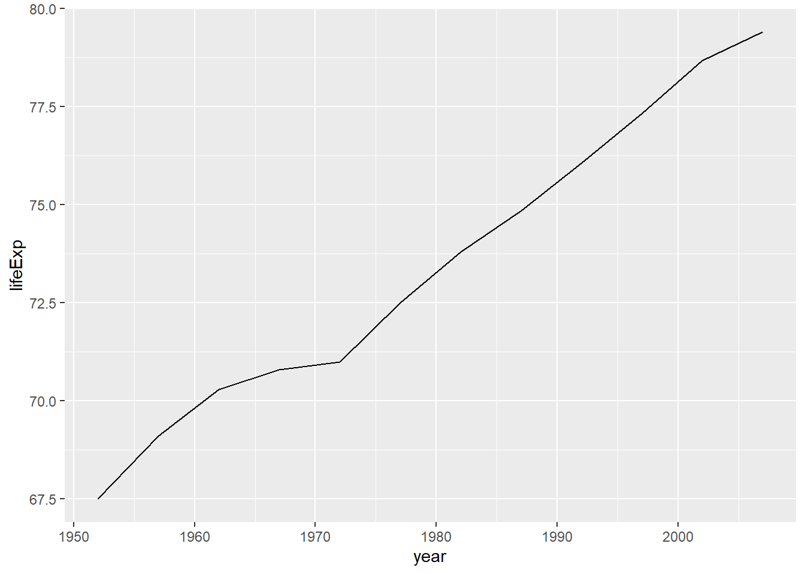

In dieser Einheit lernen Sie, wie Sie Daten in R so vorbereiten, dass sie analysierbar werden. Im Mittelpunkt stehen drei Pakete aus dem tidyverse:
dplyr für das Auswählen, Filtern, Sortieren, Gruppieren und Zusammenfassen von Daten,
tidyr für das Umformen von Datensätzen in ein „tidy“ Format,
stringr für das Bereinigen von Textwerten.
TipLernziele
Spalten mit select() auswählen oder ausschließen,
Zeilen mit filter() anhand von Bedingungen filtern,
mehrere Arbeitsschritte mit dem Pipe-Operator |> lesbar verknüpfen,
Daten mit arrange() sortieren und mit distinct() Duplikate reduzieren,
Gruppierungen mit group_by() erstellen und mit summarize() zusammenfassen,
Datensätze mit pivot_wider() in ein breiteres, tidy Format bringen,
Zeichenketten mit Funktionen aus stringr bereinigen.
5.2 Motivation für dplyr
Sie haben bereits mit Dataframes gearbeitet. Das ist wichtig: Ein Dataframe ist in R die zentrale Datenstruktur für tabellarische Daten. Sie wissen vermutlich schon, wie man Spalten mit $ anspricht, Zeilen mit eckigen Klammern auswählt und einfache Zusammenfassungen berechnet.
Warum lernen wir jetzt trotzdem noch dplyr?
Weil Dataframes zwar die Datenstruktur sind, aber noch keine besonders gute Sprache für Datenanalyse. Mit base R kann man sehr viel machen, aber bei längeren Analysen wird Code schnell schwer lesbar:
Der Code funktioniert, aber er vermischt mehrere Dinge auf einmal:
Welche Zeilen sollen behalten werden?
Welche Spalten interessieren uns?
In welcher Reihenfolge sollen die Schritte passieren?
Was ist eigentlich das Ziel dieser Operation?
Mit dplyr schreiben wir dieselbe Idee näher an der natürlichen Sprache:
# Pakete einbindenlibrary(tidyverse)
Warning: Paket 'tidyverse' wurde unter R Version 4.4.2 erstellt
Warning: Paket 'ggplot2' wurde unter R Version 4.4.3 erstellt
Warning: Paket 'tibble' wurde unter R Version 4.4.3 erstellt
Warning: Paket 'tidyr' wurde unter R Version 4.4.3 erstellt
Warning: Paket 'readr' wurde unter R Version 4.4.3 erstellt
Warning: Paket 'purrr' wurde unter R Version 4.4.3 erstellt
Warning: Paket 'dplyr' wurde unter R Version 4.4.3 erstellt
Warning: Paket 'stringr' wurde unter R Version 4.4.3 erstellt
Warning: Paket 'forcats' wurde unter R Version 4.4.3 erstellt
Warning: Paket 'lubridate' wurde unter R Version 4.4.3 erstellt
── Attaching core tidyverse packages ──────────────────────── tidyverse 2.0.0 ──
✔ dplyr 1.2.1 ✔ readr 2.2.0
✔ forcats 1.0.1 ✔ stringr 1.6.0
✔ ggplot2 4.0.3 ✔ tibble 3.3.1
✔ lubridate 1.9.5 ✔ tidyr 1.3.2
✔ purrr 1.2.2
── Conflicts ────────────────────────────────────────── tidyverse_conflicts() ──
✖ dplyr::filter() masks stats::filter()
✖ dplyr::lag() masks stats::lag()
ℹ Use the conflicted package (<http://conflicted.r-lib.org/>) to force all conflicts to become errors
library(gapminder)
Warning: Paket 'gapminder' wurde unter R Version 4.4.3 erstellt
gapminder |>filter(country =="Germany", year >=1990) |>select(country, year, lifeExp, gdpPercap)
Das liest sich wie eine kleine Analyseanweisung:
Nimm gapminder, dann behalte Deutschland ab 1990, dann wähle die interessierenden Variablen aus.
dplyr ersetzt Dataframes also nicht. Es hilft Ihnen, besser mit Dataframes zu arbeiten.
5.2.1 Warum dplyr, wenn wir schon Dataframes kennen?
5.2.1.1 1. Code wird lesbarer
Viele Analysen bestehen aus mehreren kleinen Schritten: filtern, auswählen, sortieren, neue Variablen berechnen, gruppieren, zusammenfassen. Mit dplyr bekommt jeder dieser Schritte einen klaren Namen.
Fragestellung
dplyr-Funktion
Welche Zeilen brauche ich?
filter()
Welche Spalten brauche ich?
select()
Wie sortiere ich die Daten?
arrange()
Wie berechne ich neue Variablen?
mutate()
Wie fasse ich Gruppen zusammen?
group_by() + summarise()
Dadurch wird der Code nicht nur für Sie selbst verständlicher, sondern auch für andere Personen, die Ihre Analyse nachvollziehen sollen.
5.2.1.2 2. Analysen werden weniger fehleranfällig
Base-R-Code mit eckigen Klammern ist mächtig, aber leicht zu verwechseln:
gapminder[zeilen, spalten]
Wenn Zeilen- und Spaltenlogik in einer einzigen Klammer stehen, passieren schnell Fehler: ein Komma vergessen, eine Spalte falsch geschrieben, eine Bedingung an der falschen Stelle verwendet.
Das funktioniert, aber der Workspace wird schnell unübersichtlich. Außerdem besteht die Gefahr, später versehentlich mit einem alten Zwischenobjekt weiterzuarbeiten.
5.2.1.4 4. Die gleiche Denkweise funktioniert für kleine und große Daten
Bei kleinen Beispieldatensätzen ist base R oft ausreichend. In realen Projekten werden Datensätze aber größer, Analysen länger und Arbeitsschritte wiederholbarer. dplyr bietet eine Grammatik, die mitwächst: vom einfachen Filtern bis zu gruppierten Auswertungen.
5.2.1.5 5. dplyr passt gut zu Grafiken und Berichten
Viele Analysen enden nicht mit einer Tabelle, sondern mit einer Grafik, einem Bericht oder einer statistischen Auswertung. dplyr lässt sich gut mit ggplot2, R Markdown oder Quarto kombinieren:
gapminder |>filter(country =="Germany") |>ggplot(aes(x = year, y = lifeExp)) +geom_line()

Die Datenaufbereitung steht direkt vor der Grafik. Dadurch bleibt nachvollziehbar, welche Daten tatsächlich visualisiert wurden.
5.3 Vorbereitung: Pakete laden
In diesem Kapitel verwenden wir:
dplyr für Datenmanipulation,
ggplot2 für Grafiken,
gapminder für den Beispieldatensatz.
Diese Pakete müssen einmal installiert und in jeder neuen R-Sitzung geladen werden.
# Nur einmal nötig:# install.packages("tidyverse")# install.packages("gapminder")# In jeder neuen Sitzung nötig:library(tidyverse)library(gapminder)
tidyverse lädt unter anderem dplyr, ggplot2, tidyr, readr, stringr, forcats, purrr und tibble.
Hinweis
Wenn Sie eine Funktion verwenden, die in mehreren Paketen vorkommt, können Sie den Paketnamen voranstellen, zum Beispiel dplyr::select(). Dadurch machen Sie eindeutig, welche Funktion gemeint ist.
5.4 1 Den Gapminder-Datensatz kennenlernen
Bevor wir mit dplyr Daten verändern, sollten wir den Datensatz einmal in Ruhe kennenlernen. In einer echten Analyse ist dieser Schritt sehr wichtig: Wir wollen wissen, welche Beobachtungen in den Zeilen stehen, welche Variablen in den Spalten stehen und welche Datentypen R für diese Variablen verwendet.
Der Datensatz gapminder ist im Paket gapminder enthalten. Jede Zeile beschreibt ein Land in einem bestimmten Jahr.
Schauen wir uns den Datensatz zunächst einfach an:
gapminder
# A tibble: 1,704 × 6
country continent year lifeExp pop gdpPercap
<fct> <fct> <int> <dbl> <int> <dbl>
1 Afghanistan Asia 1952 28.8 8425333 779.
2 Afghanistan Asia 1957 30.3 9240934 821.
3 Afghanistan Asia 1962 32.0 10267083 853.
4 Afghanistan Asia 1967 34.0 11537966 836.
5 Afghanistan Asia 1972 36.1 13079460 740.
6 Afghanistan Asia 1977 38.4 14880372 786.
7 Afghanistan Asia 1982 39.9 12881816 978.
8 Afghanistan Asia 1987 40.8 13867957 852.
9 Afghanistan Asia 1992 41.7 16317921 649.
10 Afghanistan Asia 1997 41.8 22227415 635.
# ℹ 1,694 more rows
5.4.1 1.1 Was bedeutet „tibble“?
gapminder ist kein gewöhnlicher Dataframe, sondern ein tibble. Ein tibble ist eine moderne Variante eines Dataframes. Für unsere Arbeit bedeutet das:
Ein tibble ist weiterhin tabellarisch aufgebaut: Zeilen sind Beobachtungen, Spalten sind Variablen.
Ein tibble kann mit den gleichen Grundideen wie ein Dataframe verwendet werden.
Die Ausgabe in der Konsole ist kompakter und übersichtlicher.
R zeigt nicht automatisch alle Zeilen und alle Spalten an, sondern nur einen sinnvollen Ausschnitt.
Das ist besonders praktisch, wenn Datensätze größer werden. Bei einem klassischen Dataframe kann die Ausgabe schnell unübersichtlich werden, wenn viele Zeilen oder Spalten vorhanden sind. Ein tibble zeigt stattdessen zuerst eine kurze Zusammenfassung: Anzahl der Zeilen, Anzahl der Spalten, Spaltennamen und Datentypen.
5.4.2 1.2 Zeilen, Spalten und Variablen
Die sechs Variablen sind:
Variable
Bedeutung
Datentyp in R
country
Land
Faktor / kategoriale Variable
continent
Kontinent
Faktor / kategoriale Variable
year
Jahr
Ganzzahl
lifeExp
Lebenserwartung bei Geburt
numerische Variable
pop
Bevölkerungszahl
Ganzzahl
gdpPercap
Bruttoinlandsprodukt pro Kopf
numerische Variable
Die kleinen Angaben unter den Spaltennamen zeigen die Datentypen:
Anzeige
Bedeutung
<fct>
Faktor, also eine kategoriale Variable
<int>
Integer, also eine ganze Zahl
<dbl>
Double, also eine numerische Variable mit Dezimalstellen
Diese Informationen sind wichtig, weil viele Funktionen je nach Datentyp unterschiedlich arbeiten. Mit numerischen Variablen können wir zum Beispiel Mittelwerte berechnen. Bei kategorialen Variablen wie continent oder country interessieren uns eher Häufigkeiten oder Gruppenvergleiche.
5.4.3 1.3 Ist gapminder wirklich ein Dataframe?
Ein tibble ist eine spezielle Form eines Dataframes. Das können wir mit class() prüfen:
class(gapminder)
[1] "tbl_df" "tbl" "data.frame"
Das bedeutet: gapminder ist gleichzeitig ein tibble und ein Dataframe. Die Bezeichnungen tbl_df und tbl zeigen die tibble-Eigenschaften. data.frame zeigt, dass R den Datensatz weiterhin als Dataframe behandeln kann.
Für Sie ist das eine gute Nachricht: Alles, was Sie über Dataframes gelernt haben, bleibt nützlich. dplyr baut darauf auf und bietet eine besser lesbare Sprache für typische Arbeitsschritte.
5.4.4 1.4 Ein Dataframe in ein Tibble umwandeln
Mit as_tibble() können wir ein bestehendes Dataframe in ein Tibble umwandeln:
# A tibble: 3 × 3
land jahr lebenserwartung
<chr> <dbl> <dbl>
1 Deutschland 2000 78
2 Frankreich 2000 79.1
3 Italien 2000 79.8
Mit class() können wir prüfen, was daraus geworden ist:
class(daten_tbl)
[1] "tbl_df" "tbl" "data.frame"
Die Ausgabe zeigt: Ein Tibble ist weiterhin ein data.frame, hat aber zusätzliche Klassen wie tbl_df und tbl.
Merke:
Ein Dataframe wird mit as_tibble() in ein Tibble umgewandelt.
mein_tibble <-as_tibble(daten_df)
5.4.5 1.5 Den Datensatz kompakt untersuchen
Für eine erste Orientierung eignen sich diese Befehle:
nrow(gapminder) # Anzahl der Zeilenncol(gapminder) # Anzahl der Spaltennames(gapminder) # Namen der Variablenclass(gapminder) # Objektklasse
Eine besonders praktische Funktion aus dem tidyverse ist glimpse():
glimpse(gapminder)
glimpse() zeigt jede Variable in einer eigenen Zeile. Das ist hilfreich, weil man schnell erkennt:
welche Variablen vorhanden sind,
welchen Datentyp sie haben,
wie typische Werte aussehen.
Zum Vergleich können Sie auch str() verwenden:
str(gapminder)
Beide Funktionen geben Strukturinformationen aus. glimpse() ist häufig etwas angenehmer zu lesen, besonders bei breiten Tabellen mit vielen Spalten.
5.4.6 1.6 Erste inhaltliche Fragen an den Datensatz
Schon bevor wir Daten filtern oder verändern, können wir einfache Fragen stellen:
unique(gapminder$continent)
[1] Asia Europe Africa Americas Oceania
Levels: Africa Americas Asia Europe Oceania
Dieser Befehl zeigt, welche Kontinente im Datensatz vorkommen.
range(gapminder$year)
[1] 1952 2007
Dieser Befehl zeigt das kleinste und größte Jahr.
length(unique(gapminder$country))
[1] 142
Dieser Befehl zeigt, wie viele Länder im Datensatz enthalten sind.
Diese Befehle sind base R. Sie funktionieren gut und zeigen: dplyr ersetzt unser bisheriges Wissen nicht. Im nächsten Schritt lernen wir aber eine Schreibweise kennen, mit der solche Analysen lesbarer werden: den Pipe Operator.
Mit dem Pipe Operator aus dplyr könnten wir die Anzahl der Länder zum Beispiel so bestimmen:
gapminder |>distinct(country) |>nrow()
Gelesen bedeutet das:
Nimm gapminder, behalte jede Ausprägung von country nur einmal und zähle dann die Zeilen.
Mit filter() wählen Sie Zeilen aus, die eine Bedingung erfüllen.
5.5.1 2.1 Ein Land auswählen
gapminder |>filter(country =="Germany")
Dieser Code behält nur Zeilen, in denen country genau den Wert "Germany" hat.
Zum Vergleich in base R:
gapminder[gapminder$country =="Germany", ]
Beide Varianten liefern dasselbe Ergebnis. Die dplyr-Variante ist jedoch näher an der Frage formuliert: „Filtere die Daten auf Deutschland.“
5.5.2 2.2 Mehrere Bedingungen verwenden
gapminder |>filter(country =="Germany", year >=1990)
Mehrere Bedingungen innerhalb von filter() werden wie ein logisches UND behandelt. Es bleiben also nur Zeilen erhalten, bei denen alle Bedingungen erfüllt sind.
Sie können Bedingungen auch explizit mit & verbinden:
gapminder |>filter(country =="Germany"& year >=1990)
gapminder |>mutate(lifeExp_group =case_when( lifeExp <50~"unter 50", lifeExp <70~"50 bis unter 70",TRUE~"70 und mehr" )) |>select(country, year, lifeExp, lifeExp_group)
case_when() ist nützlich, wenn Sie mehrere Bedingungen in Kategorien übersetzen möchten. Die letzte Zeile TRUE ~ "70 und mehr" aus dem Beispiel funktioniert hier wie eine Auffangkategorie: Alle Beobachtungen, die keine der vorherigen Bedingungen erfüllen, erhalten diesen Wert.
5.9.4 Aufgabe: Neue Variablen
Erstellen Sie einen Datensatz für das Jahr 2007 mit:
pop_mio: Bevölkerung in Millionen,
gdp_total: geschätztes gesamtes BIP,
high_lifeExp: TRUE, wenn die Lebenserwartung mindestens 75 Jahre beträgt, sonst FALSE.
Links steht also der neue Name, rechts der bisherige Name. Die ursprüngliche Tabelle gapminder wird dadurch nicht dauerhaft verändert, solange wir das Ergebnis nicht speichern.
rename() ist besonders nützlich, wenn Spaltennamen später in Tabellen, Auswertungen oder Grafiken verständlicher erscheinen sollen.
Jetzt wird für jede Kombination aus Kontinent und Jahr eine Zusammenfassung berechnet. Das Argument .groups = "drop" sorgt dafür, dass die Gruppierung nach der Zusammenfassung wieder aufgehoben wird. Das Ergebnis ist dadurch eine normale Tabelle und spätere Berechnungen werden nicht versehentlich weiterhin gruppiert ausgeführt.
5.11.4 Aufgabe: Gruppierte Auswertungen
Beantworten Sie mit group_by() und summarise():
Wie hoch ist die durchschnittliche Lebenserwartung pro Kontinent im Jahr 1952?
Wie hoch ist sie im Jahr 2007?
Wie viele Länder enthält jeder Kontinent im Datensatz?
Wie groß ist die Gesamtbevölkerung pro Kontinent im Jahr 2007?
Welcher Kontinent hatte 2007 im Mittel das höchste BIP pro Kopf?
6 11 Mini-Projekt
Bearbeiten Sie eine der folgenden Analysefragen. Dokumentieren Sie Ihren Code und schreiben Sie zu jedem Schritt einen kurzen Kommentar.
6.1 Option A: Lebenserwartung in Europa
Untersuchen Sie die Entwicklung der Lebenserwartung in europäischen Ländern.
Leitfragen:
Welche europäischen Länder hatten 1952 die höchste Lebenserwartung?
Welche hatten 2007 die höchste Lebenserwartung?
Wie stark ist die Lebenserwartung in jedem europäischen Land gestiegen?
Welche Länder zeigen die größten Veränderungen?
6.2 Option B: Bevölkerung und BIP pro Kopf
Untersuchen Sie den Zusammenhang zwischen Bevölkerung und BIP pro Kopf im Jahr 2007.
Leitfragen:
Welche Länder hatten 2007 die größte Bevölkerung?
Welche Länder hatten 2007 das höchste BIP pro Kopf?
Gibt es sichtbare Unterschiede zwischen Kontinenten?
Wie könnten Ausreißer die Interpretation beeinflussen?
6.3 Option C: Kontinente im Vergleich
Vergleichen Sie die Kontinente im Jahr 2007.
Leitfragen:
Wie hoch ist die mittlere Lebenserwartung pro Kontinent?
Wie groß ist die Gesamtbevölkerung pro Kontinent?
Wie hoch ist das mittlere BIP pro Kopf pro Kontinent?
Welche Kennzahl eignet sich am besten für einen fairen Vergleich? Warum?
7 5 Zusammenfassung
In dieser Einheit haben Sie gelernt:
Mit select() wählen Sie Spalten aus oder schließen sie aus.
Mit filter() behalten Sie nur Zeilen, die eine Bedingung erfüllen.
Mit dem Pipe-Operator |> schreiben Sie Datenanalyse-Code schrittweise und lesbar.
Mit arrange() sortieren Sie Daten.
Mit distinct() reduzieren Sie wiederholte Beobachtungen.
Mit group_by() und summarize() berechnen Sie gruppierte Kennzahlen.
Mit pivot_wider() formen Sie lange Daten in breite Daten um.
Mit stringr bereinigen Sie Textwerte.
7.1 Reflexionsfragen
Warum ist Datenbereinigung ein wichtiger Schritt vor der Analyse?
Was kann passieren, wenn ein Datensatz noch gruppiert ist und Sie weitere Berechnungen durchführen?
Wann ist automatische Textbereinigung hilfreich, und wann kann sie problematisch sein?
Welche der Funktionen aus dieser Einheit werden Sie vermutlich am häufigsten verwenden?
8 Quelle und Lizenz
Dieses Skript ist eine didaktische Adaption der Inhalte aus:
CS50’s Introduction to Programming with R, Lecture 4: Tidying Data.
Quelle: https://cs50.harvard.edu/r/notes/4/
Die CS50-Kursmaterialien stehen unter der Creative-Commons-Lizenz CC BY-NC-SA 4.0. Entsprechend ist diese Bearbeitung ebenfalls unter CC BY-NC-SA 4.0 zu verwenden. Die Bearbeitung wurde ins Deutsche übertragen, neu strukturiert und um Selbstlernaufgaben, Hinweise sowie eigenständige Beispieldatensätze ergänzt.